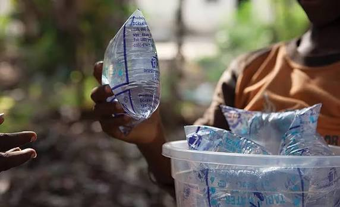
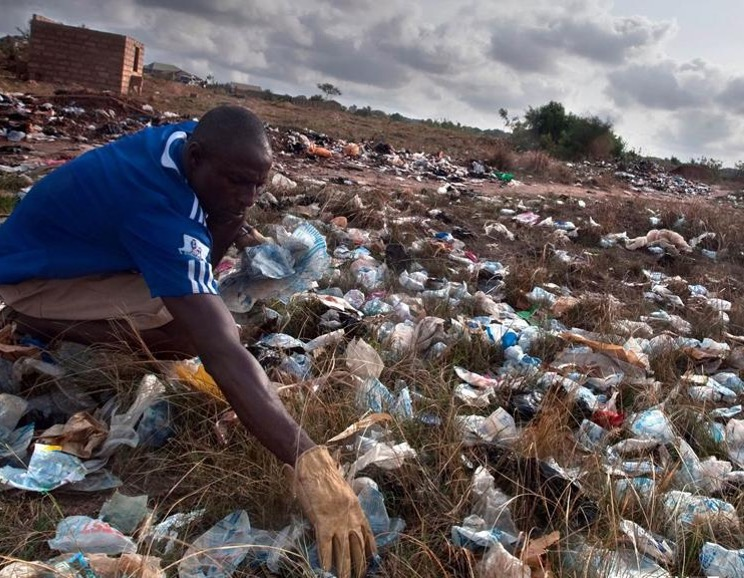
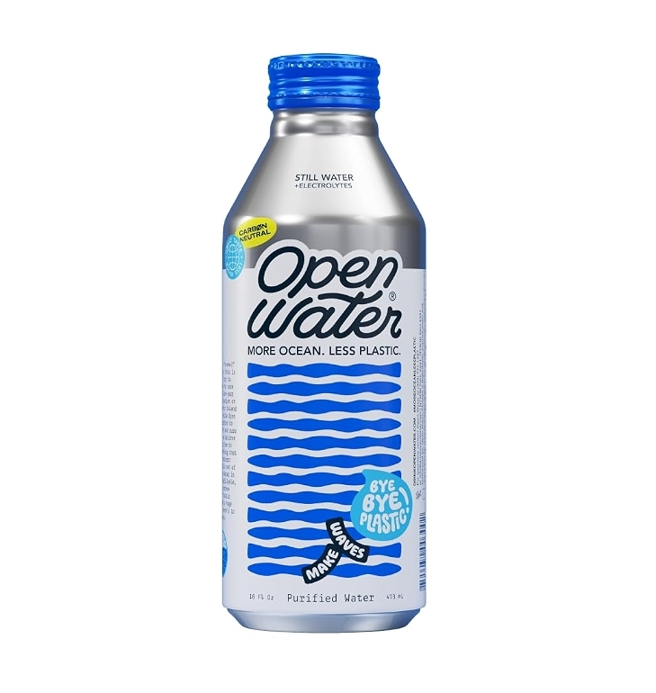
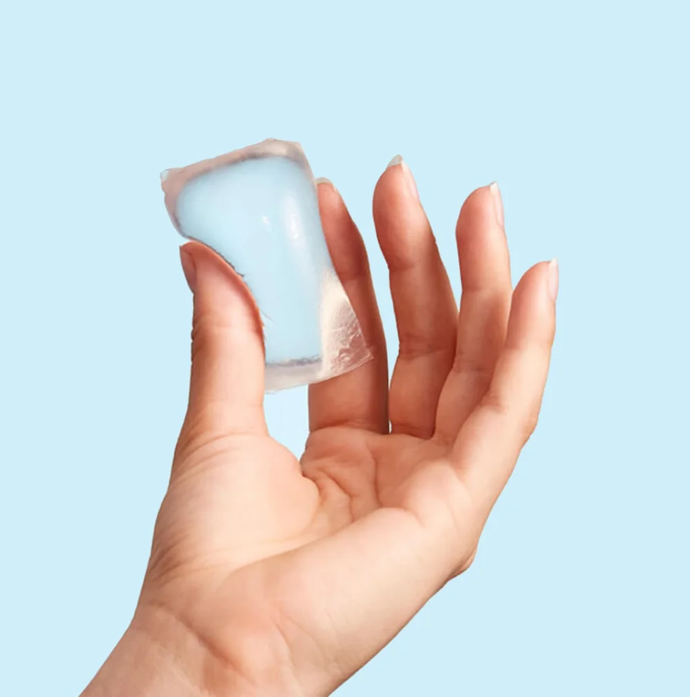
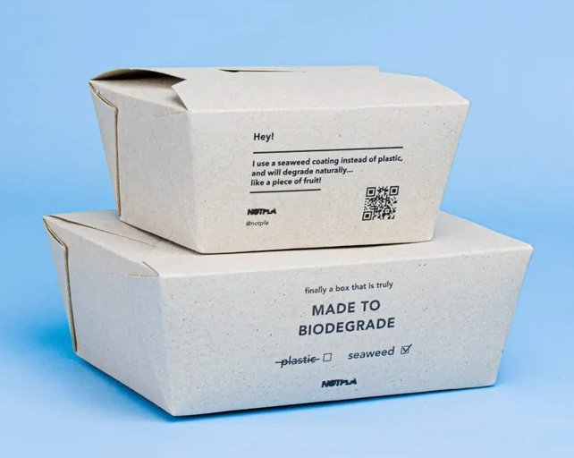

Plastic Sachet Waste Generation
Systems design to reduce plastic water-sachet waste in Monrovia, Liberia
This project was different from anything I'd done before: the "product" wasn't a product at all — it was a system. In Monrovia, Liberia, plastic water sachets are everywhere, and the waste they create is an enormous, tangled problem. My job was to understand that whole system and find the places where a well-placed intervention could actually shift it.
The problem is a chain
The waste doesn't come from one bad actor — it comes from a chain of linked causes. Mapping it out was the first real work, because you can't intervene in a system you haven't seen clearly:


People rely on sachets for three understandable reasons — they're affordable, available, and safe — in a place where clean water often isn't. Any real solution has to respect that, not ignore it.
Three places to intervene
Seeing the chain made the intervention points obvious. I broke the problem into three spaces, each attacking a different link:
Access to piped water — reduce sachet use at the source by expanding the network of drinkable, piped water
across the city and, eventually, the country.
Waste generation — cut the plastic created in the first place: biodegradable sachets, safely disposable liners,
or a shift to recyclable aluminum.
Waste management — deal with the plastic already in the environment through policy (incentives to collect, penalties
for littering) and education (school programs and clubs organizing cleanups).
Learning from what exists
Rather than reinvent, I studied real solutions already in the world and analyzed each one honestly. Notpla's seaweed-based Ooho sachets are edible and biodegradable — remarkable, but delicate, short-lived, and (because they're edible) still need outer packaging. Their sturdier seaweed takeaway box solves some of that, but still takes weeks to biodegrade and risks leakage. Open Water's infinitely-recyclable aluminum bottles sidestep plastic entirely, with an industry recycling rate near 70% and carbon-neutral operations. Each taught me something about the tradeoffs any Monrovia solution would have to navigate.



Grounding it in Liberia
The most important lesson was that you can't design for a place you don't understand. I researched Liberia deeply — its economy, government, demographics, main sources of livelihood, values, history, and culture — because that context is where the problem actually lives. Understanding the end user and what they value isn't a nice-to-have; it's the whole foundation of a solution that could work rather than one imposed from outside.
I was used to designing a product for a problem. This taught me to design for a system — and to start by understanding the world the problem lives in, not the object I wanted to make.
Reflection
This was the hardest kind of design for me, and the most stretching. I had experience designing specific product and service solutions to specific problems — but a nationwide waste system doesn't work like that. I had to change how I thought: to zoom out to the whole system, to research the "environment" of the problem as seriously as the problem itself, and to analyze existing solutions with a rigorous eye — their materials, capacity, cost, mission, and shortcomings — before proposing anything. It taught me a way of thinking I now reach for whenever a problem is bigger than a single object: understand the system, respect the people inside it, and intervene where it actually counts.